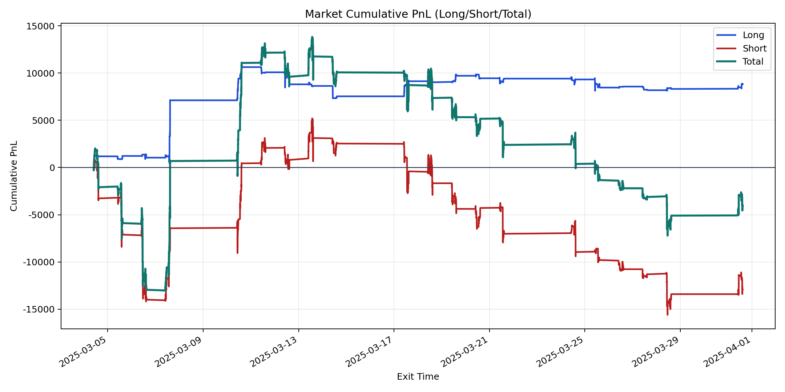
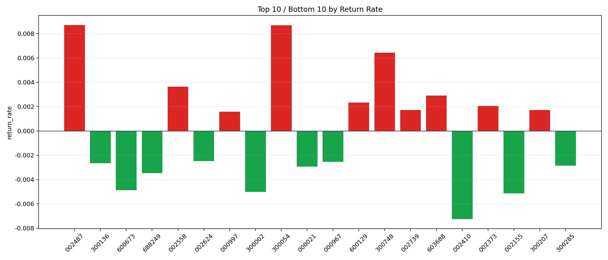

| repo_root | /home/haoranyou/data/output/alpha0.4_1w_5s_3ticks_index_filter/index_weights_500 |
|---|---|
| period_months | 1 |
| period_label | 2025-03-04_to_2025-03-31 |
| start_time | 2025-03-04 09:51:02 |
| end_time | 2025-03-31 14:45:02 |
| n_trades | 8817 |
| n_symbols | 72 |
| total_pnl | -4049.8087499999115 |
| long_total_pnl | 8838.646199999952 |
| short_total_pnl | -12888.454949999865 |
| total_entry_notional | 80150375.0 |
| long_entry_notional | 10062961.0 |
| short_entry_notional | 70087414.0 |
| total_return_rate | -5.0527633214441126e-05 |
| long_return_rate | 0.0008783345379158234 |
| short_return_rate | -0.00018389114698967013 |
| top_symbols_by_return | ["002487", "300054", "300748", "002558", "603688", "600129", "002373", "300207", "002739", "000997"] |
| bottom_symbols_by_return | ["002410", "002155", "300002", "600673", "688249", "000021", "300285", "300136", "000967", "002624"] |

